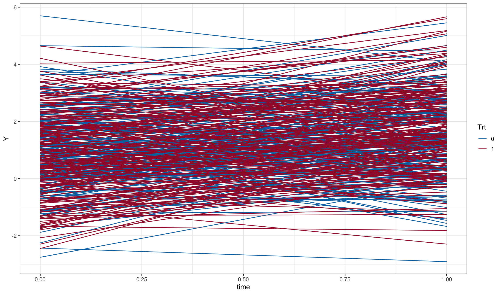
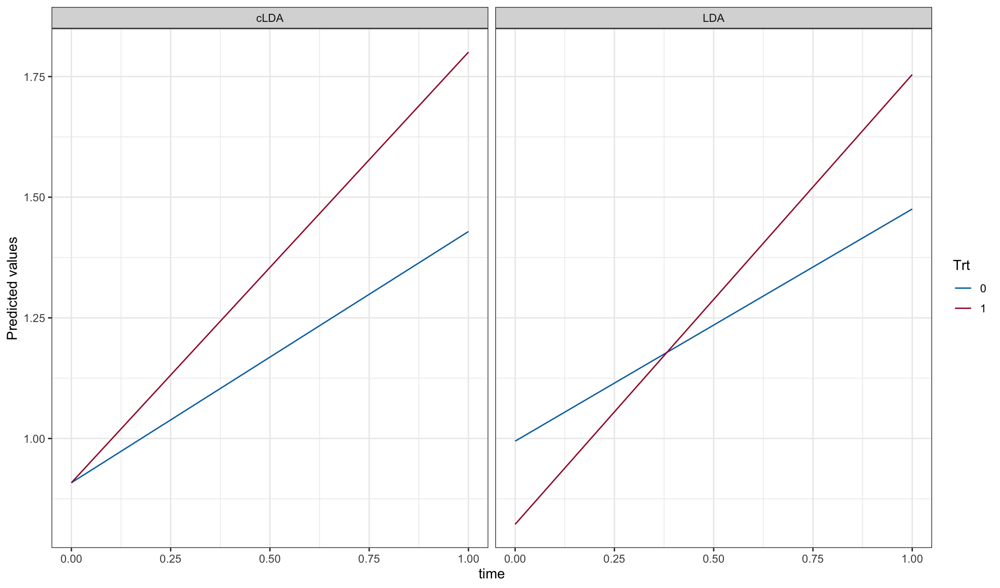
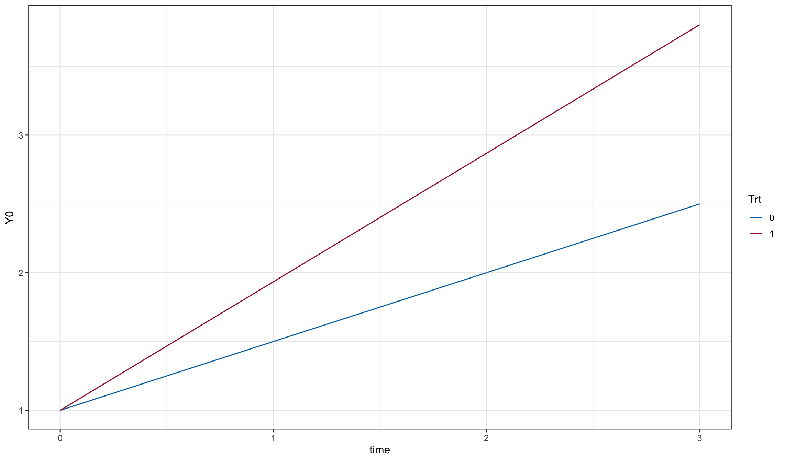
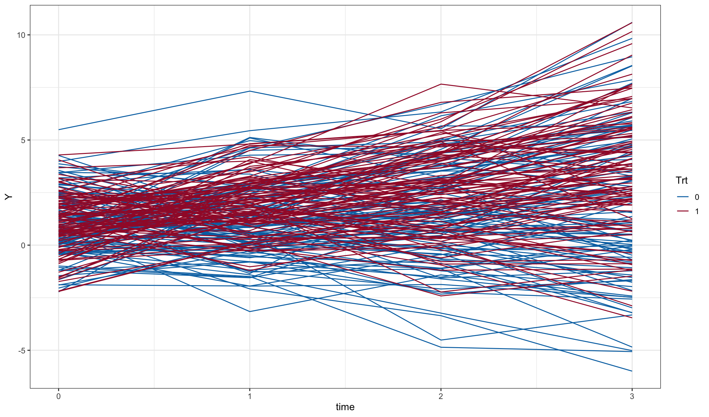
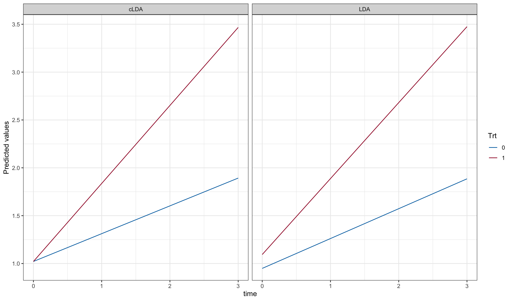

library(longpower)
library(nlme)
library(mvtnorm)
library(parallel)
library(ggplot2)
library(contrast)
library(tidyr)
library(dplyr)Constrained Longitudinal Data Analysis
Liang and Zeger (2000) describe a constrained longitudinal data analysis for comparing the time course of two randomized groups in which the model constains the two groups to share a common mean at baseline. Lu (2010) compared the power of this approach to a longitudinal analysis of covariance approach. We conduct a few simple simulation studies to interrogate the effect of the constraint on power to detect group differences. We do not simulate any missing data here.
Packages used
Pre-post design with two repeated measures simulated via random intercept model
Simulation settings
sigma_residual <- 1
sigma_random_intercept <- 1
sigma_random_slope <- 0
Time <- 0:1
Beta <- c('(Intercept)'=1, time=0.5, 'trt:time'=0.4)
Beta.null <- c('(Intercept)'=1, time=0.5, 'trt:time'=0)
n <- 200 # per group
N <- 2*nAnalytic calculations
cov.t <- function(t1, t2, sig2.i, sig2.s, cov.s.i){
sig2.i + t1*t2*sig2.s + (t1+t2)*cov.s.i
}
m = length(Time)
R = outer(Time, Time, function(x,y){cov.t(x,y, sigma_random_intercept^2, sigma_random_slope^2, 0)})
R = R + diag(sigma_residual^2, m, m)
power.t.test(n=n, delta=Beta['trt:time'], sd=sqrt(2*sigma_random_intercept))
Two-sample t test power calculation
n = 200
delta = 0.4
sd = 1.414214
sig.level = 0.05
power = 0.8055549
alternative = two.sided
NOTE: n is number in *each* grouplmmpower(n=n, delta=Beta['trt:time'], t=Time,
sig2.e=sigma_residual^2, sig2.s=sigma_random_slope^2,
sig2.i=sigma_random_intercept, cov.s.i=0)
Longitudinal linear model slope power calculation (Diggle et al 2002, page 29)
N = 400
n = 200, 200
delta = 0.4
sigma2 = 1
sig.level = 0.05
power = 0.8074296
alternative = two.sided
NOTE: N is *total* sample size and n is sample size in *each* group
R:
[,1] [,2]
[1,] 2 1
[2,] 1 2diggle.linear.power(n=n, delta=Beta['trt:time'], t=Time, R=R)
Longitudinal linear model slope power calculation (Diggle et al 2002, page 29)
N = 400
n = 200, 200
delta = 0.4
sigma2 = 1
sig.level = 0.05
power = 0.8074296
alternative = two.sided
NOTE: N is *total* sample size and n is sample size in *each* group
R:
[,1] [,2]
[1,] 2 1
[2,] 1 2Set up data for simulation
dd0 <- expand.grid(time = Time, id = 1:N)
dd0$trt <- ifelse(dd0$id <= N/2, 0, 1)
dd0 <- as.data.frame(model.matrix(~ id+trt*time, data = dd0))
dd0$Trt <- as.factor(dd0$trt)
dd0$Y0 <- as.matrix(dd0[, names(Beta)]) %*% Beta
dd0$Y0.null <- as.matrix(dd0[, names(Beta.null)]) %*% Beta.null
ggplot(dd0, aes(x=time, y=Y0, color=Trt)) + geom_line()
set.seed(20130318)
dd1 <- merge(dd0, data.frame(
id = 1:N,
ran.intercept = rnorm(N, sd=sigma_random_intercept),
ran.slope = rnorm(N, sd=sigma_random_slope)
))
dd1$e <- rnorm(nrow(dd1), sd=sigma_residual)
dd1$Y <- with(dd1, Y0 + ran.intercept + ran.slope*time + e)
ggplot(dd1, aes(x=time, y=Y, color=Trt, group = id)) + geom_line()
# unconstrained:
fit.LDA <- lme(Y~trt*time, random=~1|id, data=dd1)
printCoefmat(summary(fit.LDA)$tTable) Value Std.Error DF t-value p-value
(Intercept) 0.994529 0.101708 398.000000 9.7783 < 2.2e-16 ***
trt -0.172352 0.143837 398.000000 -1.1982 0.231533
time 0.481055 0.097516 398.000000 4.9331 1.191e-06 ***
trt:time 0.450842 0.137908 398.000000 3.2692 0.001173 **
---
Signif. codes: 0 '***' 0.001 '**' 0.01 '*' 0.05 '.' 0.1 ' ' 1# constrained:
fit.cLDA <- lme(Y~time+time:trt, random=~1|id, data=dd1)
printCoefmat(summary(fit.cLDA)$tTable) Value Std.Error DF t-value p-value
(Intercept) 0.908353 0.071944 399.000000 12.6259 < 2.2e-16 ***
time 0.520646 0.091756 398.000000 5.6742 2.686e-08 ***
time:trt 0.371660 0.121052 398.000000 3.0703 0.002285 **
---
Signif. codes: 0 '***' 0.001 '**' 0.01 '*' 0.05 '.' 0.1 ' ' 1newdat0 <- expand.grid(trt=0:1, time=Time)
mods <- list(LDA = fit.LDA, cLDA=fit.cLDA)
pd <- do.call(rbind, lapply(names(mods), function(name){
cbind(newdat0,
Y=predict(mods[[name]], newdat0, level=0),
model = name
)
}))
pd$Trt <- as.factor(pd$trt)
ggplot(pd, aes(y=Y, x=time, color = Trt)) + geom_line() + facet_grid(.~model)
Simulate
set.seed(20130318)
results <- do.call(rbind, mclapply(1:10000, function(x){
dd1 <- merge(dd0, data.frame(
id = 1:N,
ran.intercept = rnorm(N, sd=sigma_random_intercept),
ran.slope = rnorm(N, sd=sigma_random_slope)
))
dd1$e <- rnorm(nrow(dd1), sd=sigma_residual)
dd1$Y <- with(dd1, Y0 + ran.intercept + ran.slope*time + e)
dd1$Y.null <- with(dd1, Y0.null + ran.intercept + ran.slope*time + e)
ddw <- merge(
subset(dd1, time==0, c('id', 'trt', 'Y', 'Y.null')),
subset(dd1, time==1, c('id', 'trt', 'Y', 'Y.null')),
by=c('id', 'trt'), suffixes=c('.0','.1')
)
ddw$d <- with(ddw, Y.1-Y.0)
ddw$d.null <- with(ddw, Y.null.1-Y.null.0)
prepost <- list(
ttest.power = t.test( d~trt, data=ddw)$p.value,
ttest.alpha = t.test( d.null~trt, data=ddw)$p.value,
ancova1.power = summary(lm( d~Y.0 + trt, data=ddw))$coef['trt', 'Pr(>|t|)'],
ancova1.alpha = summary(lm(d.null~Y.null.0 + trt, data=ddw))$coef['trt', 'Pr(>|t|)'],
ancova2.power = summary(lm( d~scale(Y.0)*trt, data=ddw))$coef['trt', 'Pr(>|t|)'],
ancova2.alpha = summary(lm(d.null~scale(Y.null.0)*trt, data=ddw))$coef['trt', 'Pr(>|t|)']
)
fits <- list(
LDA.power = lme( Y~time*trt, random=~1|id, data=dd1),
LDA.alpha = lme(Y.null~time*trt, random=~1|id, data=dd1),
cLDA.power = lme( Y~time+time:trt, random=~1|id, data=dd1),
cLDA.alpha = lme(Y.null~time+time:trt, random=~1|id, data=dd1)
)
c(unlist(prepost),
slopes = unlist(lapply(fits, function(fit){
summary(fit)$tTable['time:trt', 'p-value']
})),
contrasts = unlist(lapply(fits[1:2], function(fit){
pv <- try(as.numeric(contrast(fit,
a=list(time=Time[length(Time)], trt=0),
b=list(time=Time[length(Time)], trt=1))$Pvalue), silent = TRUE)
if(class(pv) == 'try-error'){
fit <- update(fit, random=~1|id)
pv <- try(as.numeric(contrast(fit,
a=list(time=Time[length(Time)], trt=0),
b=list(time=Time[length(Time)], trt=1))$Pvalue), silent = TRUE)
}
pv
}))
)
}, mc.cores = 10))Simulated power results (%)
knitr::kable(cbind('Pr(p<0.05)'=apply(results, 2, function(x){
sum(x < 0.05)/length(x)*100
})))| Pr(p<0.05) | |
|---|---|
| ttest.power | 80.28 |
| ttest.alpha | 4.79 |
| ancova1.power | 90.15 |
| ancova1.alpha | 5.14 |
| ancova2.power | 90.15 |
| ancova2.alpha | 5.13 |
| slopes.LDA.power | 80.28 |
| slopes.LDA.alpha | 4.79 |
| slopes.cLDA.power | 90.32 |
| slopes.cLDA.alpha | 5.15 |
| contrasts.LDA.power | 80.56 |
| contrasts.LDA.alpha | 5.40 |
Four repeated measures simulated via random slope model
Simulation settings
sigma_residual <- 1
sigma_random_intercept <- 1
sigma_random_slope <- 1
Time <- 0:3
Beta <- c('(Intercept)'=1, time=0.5, 'trt:time'=0.434)
Beta.null <- c('(Intercept)'=1, time=0.5, 'trt:time'=0)
n <- 100 # per group
N <- 2*nAnalytic calculations
m = length(Time)
R = outer(Time, Time, function(x,y){cov.t(x,y, sigma_random_intercept^2, sigma_random_slope^2, 0)})
R = R + diag(sigma_residual^2, m, m)
lmmpower(n=n, delta=Beta['trt:time'], t=Time,
sig2.e=sigma_residual^2, sig2.s=sigma_random_slope^2,
sig2.i=sigma_random_intercept^2, cov.s.i=0)
Longitudinal linear model slope power calculation (Diggle et al 2002, page 29)
N = 200
n = 100, 100
delta = 0.434
sigma2 = 1
sig.level = 0.05
power = 0.7999644
alternative = two.sided
NOTE: N is *total* sample size and n is sample size in *each* group
R:
[,1] [,2] [,3] [,4]
[1,] 2 1 1 1
[2,] 1 3 3 4
[3,] 1 3 6 7
[4,] 1 4 7 11diggle.linear.power(n=n, delta=Beta['trt:time'], t=Time, R=R)
Longitudinal linear model slope power calculation (Diggle et al 2002, page 29)
N = 200
n = 100, 100
delta = 0.434
sigma2 = 1
sig.level = 0.05
power = 0.7999644
alternative = two.sided
NOTE: N is *total* sample size and n is sample size in *each* group
R:
[,1] [,2] [,3] [,4]
[1,] 2 1 1 1
[2,] 1 3 3 4
[3,] 1 3 6 7
[4,] 1 4 7 11Set up data for simulation
dd0 <- expand.grid(time = Time, id = 1:N)
dd0$trt <- ifelse(dd0$id <= N/2, 0, 1)
dd0$t <- as.factor(dd0$time)
dd0 <- as.data.frame(model.matrix(~ id+trt*time+t, data = dd0))
dd0$t <- as.factor(dd0$time)
dd0$Trt <- as.factor(dd0$trt)
dd0$Y0 <- as.matrix(dd0[, names(Beta)]) %*% Beta
dd0$Y0.null <- as.matrix(dd0[, names(Beta.null)]) %*% Beta.null
ggplot(dd0, aes(x=time, y=Y0, color=Trt)) + geom_line()
set.seed(20130318)
dd1 <- merge(dd0, data.frame(
id = 1:N,
ran.intercept = rnorm(N, sd=sigma_random_intercept),
ran.slope = rnorm(N, sd=sigma_random_slope)
))
dd1$e <- rnorm(nrow(dd1), sd=sigma_residual)
dd1$Y <- with(dd1, Y0 + ran.intercept + ran.slope*time + e)
ggplot(dd1, aes(x=time, y=Y, color=Trt, group = id)) + geom_line()
# unconstrained:
fit.LDA <- lme(Y~trt*time, random=~time|id, data=dd1)
printCoefmat(summary(fit.LDA)$tTable) Value Std.Error DF t-value p-value
(Intercept) 0.94916 0.13384 598.00000 7.0919 3.749e-12 ***
trt 0.14495 0.18928 198.00000 0.7658 0.444712
time 0.31195 0.11256 598.00000 2.7714 0.005755 **
trt:time 0.48156 0.15918 598.00000 3.0251 0.002592 **
---
Signif. codes: 0 '***' 0.001 '**' 0.01 '*' 0.05 '.' 0.1 ' ' 1# constrained:
fit.cLDA <- lme(Y~time+time:trt, random=~time|id, data=dd1)
printCoefmat(summary(fit.cLDA)$tTable) Value Std.Error DF t-value p-value
(Intercept) 1.021636 0.094539 598.000000 10.8065 < 2.2e-16 ***
time 0.290433 0.108989 598.000000 2.6648 0.0079117 **
time:trt 0.524594 0.148934 598.000000 3.5223 0.0004604 ***
---
Signif. codes: 0 '***' 0.001 '**' 0.01 '*' 0.05 '.' 0.1 ' ' 1newdat0 <- expand.grid(trt=0:1, time=Time)
mods <- list(LDA = fit.LDA, cLDA=fit.cLDA)
pd <- do.call(rbind, lapply(names(mods), function(name){
cbind(newdat0,
Y=predict(mods[[name]], newdat0, level=0),
model = name
)
}))
pd$Trt <- as.factor(pd$trt)
ggplot(pd, aes(y=Y, x=time, color = Trt)) + geom_line() + facet_grid(.~model)
Simulate
set.seed(20130318)
results <- do.call(rbind, mclapply(1:10000, function(x){
dd1 <- merge(dd0, data.frame(
id = 1:N,
ran.intercept = rnorm(N, sd=sigma_random_intercept),
ran.slope = rnorm(N, sd=sigma_random_slope)
))
dd1$e <- rnorm(nrow(dd1), sd=sigma_residual)
dd1$Y <- with(dd1, Y0 + ran.intercept + ran.slope*time + e)
dd1$Y.null <- with(dd1, Y0.null + ran.intercept + ran.slope*time + e)
fits.cts <- list(
LDA.power = lme( Y~time*trt, random=~time|id, data=dd1, control=lmeControl(returnObject=TRUE)),
LDA.alpha = lme(Y.null~time*trt, random=~time|id, data=dd1, control=lmeControl(returnObject=TRUE)),
cLDA.power = lme( Y~time+time:trt, random=~time|id, data=dd1, control=lmeControl(returnObject=TRUE)),
cLDA.alpha = lme(Y.null~time+time:trt, random=~time|id, data=dd1, control=lmeControl(returnObject=TRUE))
)
fits.cat <- list(
LDA.power = gls( Y~(t1+t2+t3)*trt, data=dd1,
correlation = corCompSymm(form = ~ time | id), weights = varIdent(form = ~ 1 | time)),
LDA.alpha = gls(Y.null~(t1+t2+t3)*trt, data=dd1,
correlation = corCompSymm(form = ~ time | id), weights = varIdent(form = ~ 1 | time)),
cLDA.power = gls( Y~t1+t2+t3+(t1+t2+t3):trt, data=dd1,
correlation = corCompSymm(form = ~ time | id), weights = varIdent(form = ~ 1 | time)),
cLDA.alpha = gls(Y.null~t1+t2+t3+(t1+t2+t3):trt, data=dd1,
correlation = corCompSymm(form = ~ time | id), weights = varIdent(form = ~ 1 | time))
)
c(slopes = unlist(lapply(fits.cts, function(fit){
summary(fit)$tTable['time:trt', 'p-value']
})),
contrasts.cts = unlist(lapply(fits.cts[1:2], function(fit){
pv <- try(as.numeric(contrast(fit,
a=list(time=Time[length(Time)], trt=0),
b=list(time=Time[length(Time)], trt=1))$Pvalue), silent = TRUE)
if(class(pv) == 'try-error'){
fit <- update(fit, random=~1|id)
pv <- try(as.numeric(contrast(fit,
a=list(time=Time[length(Time)], trt=0),
b=list(time=Time[length(Time)], trt=1))$Pvalue), silent = TRUE)
}
pv
})),
contrasts.cat = c(
unlist(lapply(fits.cat[1:2], function(fit){
pv <- try(as.numeric(contrast(fit,
a=list(t1=0, t2=0, t3=1, trt=0),
b=list(t1=0, t2=0, t3=1, trt=1))$Pvalue), silent = TRUE)
pv
})),
unlist(lapply(fits.cat[3:4], function(fit){
summary(fit)$tTable['t3:trt', 'p-value']
}))
)
)
}, mc.cores = 10))Simulated power results (%)
knitr::kable(cbind('Pr(p<0.05)'=apply(results, 2, function(x){
sum(x < 0.05)/length(x)*100
})))| Pr(p<0.05) | |
|---|---|
| slopes.LDA.power | 79.74 |
| slopes.LDA.alpha | 5.03 |
| slopes.cLDA.power | 81.65 |
| slopes.cLDA.alpha | 5.08 |
| contrasts.cts.LDA.power | 81.12 |
| contrasts.cts.LDA.alpha | 5.96 |
| contrasts.cat.LDA.power | 81.09 |
| contrasts.cat.LDA.alpha | 5.51 |
| contrasts.cat.cLDA.power | 87.53 |
| contrasts.cat.cLDA.alpha | 10.93 |
Pre-post design simulated with fixed variance of pre-post difference and various pre-post correlations
Simulation settings
Time <- 0:1
Beta <- c('(Intercept)'=1, time=0.0514, 'trt:time'=0.0514*0.30)
Beta.null <- c('(Intercept)'=1, time=0.0514, 'trt:time'=0)
corr <- c(0.2, 0.5, 0.7)
n <- 64 # per group
N <- 2*n
sd_diff <- 0.0309Analytic calculations
power.t.test(n=n, delta=Beta['trt:time'], sd=sd_diff)
Two-sample t test power calculation
n = 64
delta = 0.01542
sd = 0.0309
sig.level = 0.05
power = 0.7999361
alternative = two.sided
NOTE: n is number in *each* groupSet up data for simulation
dd0 <- expand.grid(time = Time, id = 1:N)
dd0$trt <- ifelse(dd0$id <= N/2, 0, 1)
dd0 <- as.data.frame(model.matrix(~ id+trt*time, data = dd0))
dd0$Trt <- as.factor(dd0$trt)
dd0$Y0 <- as.matrix(dd0[, names(Beta)]) %*% Beta
dd0$Y0.null <- as.matrix(dd0[, names(Beta.null)]) %*% Beta.nullSimulate
set.seed(20130318)
results <- do.call(rbind, mclapply(1:10000, function(x){
ll <- lapply(corr, function(rho){
sd_resid <- sqrt(sd_diff^2/(2*(1-rho)))
cov_resid <- rho * sd_resid^2
resids <- gather(
data.frame(
id = 1:N,
rmvnorm(n=N, mean=c(0,0), sigma=matrix(c(sd_resid^2,cov_resid,cov_resid,sd_resid^2), nrow=2))),
time, e, 2:3) %>%
mutate(time = as.numeric(gsub('X', '', time))-1)
dd1 <- merge(dd0, resids, by=c('id', 'time'))
dd1$Y <- with(dd1, Y0 + e)
dd1$Y.null <- with(dd1, Y0.null + e)
ddw <- merge(
subset(dd1, time==0, c('id', 'trt', 'Y', 'Y.null')),
subset(dd1, time==1, c('id', 'trt', 'Y', 'Y.null')),
by=c('id', 'trt'), suffixes=c('.0','.1')
)
ddw$d <- with(ddw, Y.1-Y.0)
ddw$d.null <- with(ddw, Y.null.1-Y.null.0)
prepost <- list(
ttest.power = t.test( d~trt, data=ddw)$p.value,
ttest.alpha = t.test( d.null~trt, data=ddw)$p.value,
ancova1.power = summary(lm( d~Y.0 + trt, data=ddw))$coef['trt', 'Pr(>|t|)'],
ancova1.alpha = summary(lm(d.null~Y.null.0 + trt, data=ddw))$coef['trt', 'Pr(>|t|)'],
ancova2.power = summary(lm( d~scale(Y.0)*trt, data=ddw))$coef['trt', 'Pr(>|t|)'],
ancova2.alpha = summary(lm(d.null~scale(Y.null.0)*trt, data=ddw))$coef['trt', 'Pr(>|t|)']
)
fits <- list(
LDA.power = lme( Y~time*trt, random=~1|id, data=dd1, control=lmeControl(returnObject=TRUE)),
LDA.alpha = lme(Y.null~time*trt, random=~1|id, data=dd1, control=lmeControl(returnObject=TRUE)),
cLDA.power = lme( Y~time+time:trt, random=~1|id, data=dd1, control=lmeControl(returnObject=TRUE)),
cLDA.alpha = lme(Y.null~time+time:trt, random=~1|id, data=dd1, control=lmeControl(returnObject=TRUE))
)
c(unlist(prepost),
slopes = unlist(lapply(fits, function(fit){
summary(fit)$tTable['time:trt', 'p-value']
})),
contrasts = unlist(lapply(fits[1:2], function(fit){
pv <- try(as.numeric(contrast(fit,
a=list(time=Time[length(Time)], trt=0),
b=list(time=Time[length(Time)], trt=1))$Pvalue), silent = TRUE)
if(class(pv) == 'try-error'){
fit <- update(fit, random=~1|id)
pv <- try(as.numeric(contrast(fit,
a=list(time=Time[length(Time)], trt=0),
b=list(time=Time[length(Time)], trt=1))$Pvalue), silent = TRUE)
}
pv
}))
)
})
names(ll) <- corr
unlist(ll)
}, mc.cores = 10))Simulated power results (%)
knitr::kable(cbind('Pr(p<0.05)'=apply(results, 2, function(x){
sum(x < 0.05)/length(x)*100
})))| Pr(p<0.05) | |
|---|---|
| 0.2.ttest.power | 68.03 |
| 0.2.ttest.alpha | 4.87 |
| 0.2.ancova1.power | 58.75 |
| 0.2.ancova1.alpha | 4.73 |
| 0.2.ancova2.power | 58.82 |
| 0.2.ancova2.alpha | 4.73 |
| 0.2.slopes.LDA.power | 67.97 |
| 0.2.slopes.LDA.alpha | 4.87 |
| 0.2.slopes.cLDA.power | 58.13 |
| 0.2.slopes.cLDA.alpha | 4.85 |
| 0.2.contrasts.LDA.power | 58.24 |
| 0.2.contrasts.LDA.alpha | 4.59 |
| 0.5.ttest.power | 67.45 |
| 0.5.ttest.alpha | 5.17 |
| 0.5.ancova1.power | 67.18 |
| 0.5.ancova1.alpha | 4.97 |
| 0.5.ancova2.power | 67.29 |
| 0.5.ancova2.alpha | 4.97 |
| 0.5.slopes.LDA.power | 67.41 |
| 0.5.slopes.LDA.alpha | 5.17 |
| 0.5.slopes.cLDA.power | 67.11 |
| 0.5.slopes.cLDA.alpha | 5.08 |
| 0.5.contrasts.LDA.power | 67.42 |
| 0.5.contrasts.LDA.alpha | 5.03 |
| 0.7.ttest.power | 67.72 |
| 0.7.ttest.alpha | 5.02 |
| 0.7.ancova1.power | 67.82 |
| 0.7.ancova1.alpha | 5.05 |
| 0.7.ancova2.power | 67.99 |
| 0.7.ancova2.alpha | 5.06 |
| 0.7.slopes.LDA.power | 67.64 |
| 0.7.slopes.LDA.alpha | 5.02 |
| 0.7.slopes.cLDA.power | 67.78 |
| 0.7.slopes.cLDA.alpha | 4.95 |
| 0.7.contrasts.LDA.power | 55.50 |
| 0.7.contrasts.LDA.alpha | 5.09 |
So the t-test power is fixed at 80% (by design), the unconstrained LDA has nearly identical power to t-test; while ANCOVA and constrained LDA have similar power (always better power than t-test, but power decreases with increasing pre-post correlation). ANCOVA2 has similar power as ANCOVA1 (not surprising since no interaction between baseline outcome and group was simulated).
This confirms that the cLDA is preferred whenever we have two timepoints in a randomized study; just as ANCOVA is always preferred to t-test. Of course, cLDA has the added advantage of accommodating missing data.